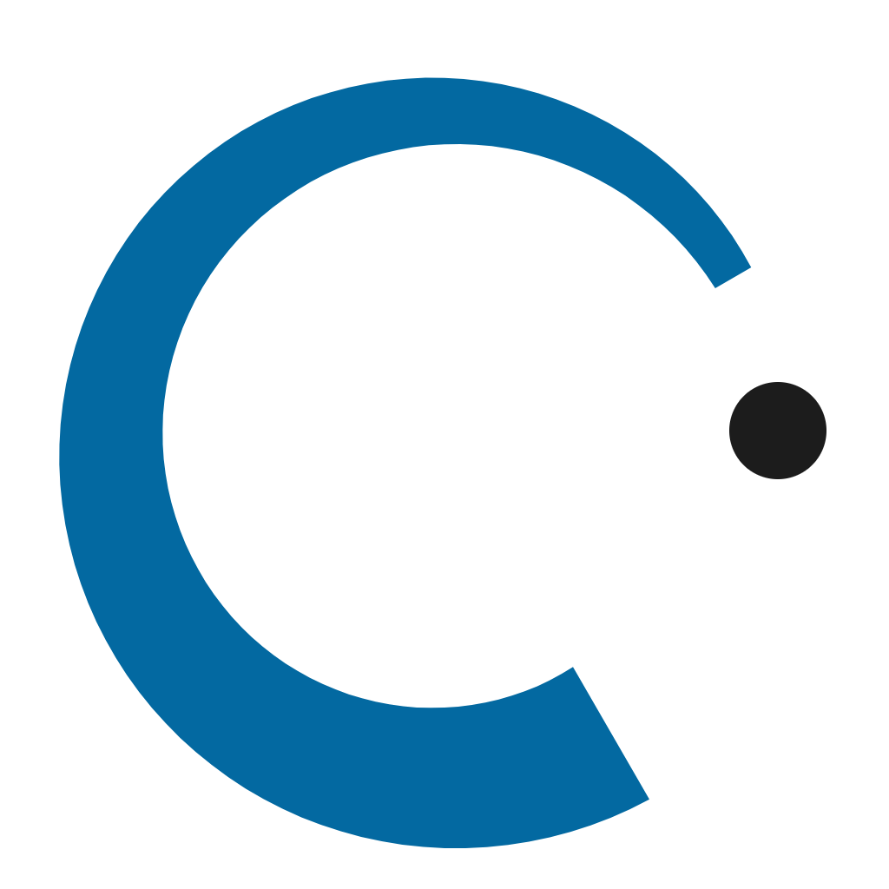

Ниже перечислено всё, что входит в готовый сайт, с ценой за каждый пункт. Разбивка нужна для двух вещей: видеть, из чего складывается сумма, и понимать стоимость будущих правок — цена доработки равна цене соответствующего пункта.
| № | Функционал | Стоимость |
|---|---|---|
| 01 | Дизайн-концепция и дизайн-система Индивидуальный дизайн, не шаблон. Фирменная палитра, выведенная из вашего логотипа в Instagram; шкала типографики, сетка, кнопки, состояния наведения. Все цвета и размеры вынесены в переменные — перекрасить сайт можно за одну правку. | $40 |
| 02 | Три языка: каракалпакский, узбекский, русский 219 строк текста на каждом языке, переключатель в шапке, запоминание выбора, автоопределение языка браузера. Переключается весь сайт целиком, включая заголовок вкладки и описание для поисковиков. | $35 |
| 03 | Адаптивность: от телефона до широкого монитора Проверено на 390, 820, 1024, 1280, 1440, 1600 и 1920 px. Типографика плавно растёт вместе с экраном, длина строки удерживается в читаемых пределах на всех трёх языках, горизонтальной прокрутки нет нигде. | $26 |
| 04 | Первый экран Заголовок, описание, кнопка записи и фотография Бранденбургских ворот, перекрашенная в фирменный фиолетовый прямо в браузере. На телефоне изображение скрывается, чтобы не отодвигать содержание. | $20 |
| 05 | Блок государственной программы «2+6» Отдельная фиолетовая полоса с ключевым предложением: оплата за 2 месяца, остальные 6 — за счёт государства. Крупная цифра, пояснение и кнопка. | $12 |
| 06 | Раздел «Почему мы» Шесть принципов работы центра: речь с первого занятия, малые группы, формат ÖSD и telc, путь после языка, контроль каждые две недели, Sprachclub. | $10 |
| 07 | Каталог курсов с раскрытием Пять курсов списком: номер, уровень, название, описание, срок. Нажатие на «+» раскрывает программу курса и кнопку записи; открыт всегда только один. Нажатие подставляет выбранный курс в форму заявки. На телефоне список перестраивается в блоки без горизонтальной прокрутки. | $25 |
| 08 | Раздел «Пути в Германию» Четыре маршрута — Ausbildung, Studium, Gastronomie · Pflege, FSJ · Au-Pair — с требуемым уровнем языка для каждого. | $12 |
| 09 | Видео-презентация центра Ролик на 30 секунд из шести сцен, собранный не из видеофайла, а прямо на странице: кнопка воспроизведения, перемотка, метки глав, переход по главам. Весит ноль килобайт, остаётся резким на любом экране и переводится на три языка вместе с сайтом. | $30 |
| 10 | Отзывы учеников Слайдер с перелистыванием кнопками, точками и свайпом на телефоне. | $12 |
| 11 | Раздел «Преподаватели» Карточки с именем, направлением и кратким описанием опыта. | $8 |
| 12 | Тарифы Три варианта: офлайн-группа, программа «2+6» с выделением как основного предложения, и пакет Ausbildung. У каждого — состав и кнопка записи. | $12 |
| 13 | Частые вопросы Семь вопросов в виде аккордеона: открытым остаётся только один. | $10 |
| 14 | Форма заявки Имя, телефон, уровень, удобное время, цель и комментарий. Проверка полей с подсказками на языке посетителя, защита от спам-ботов, экран благодарности. Заявка сохраняется и передаётся в Telegram готовым сообщением; при желании подключается отправка на ваш адрес или в Google-таблицу. | $28 |
| 15 | Подвал и контакты Телефон кликабельной ссылкой, адрес, часы работы, Instagram и Telegram. Контакты собраны в одном месте в коде — меняются в одну строку. | $5 |
| 16 | Подготовка к поисковикам и соцсетям Заголовки и описания страницы на трёх языках, картинка предпросмотра при отправке ссылки в мессенджер, иконка сайта во вкладке браузера. | $10 |
| 17 | Доступность и корректная вёрстка Управление с клавиатуры, видимые рамки фокуса, подписи для программ чтения с экрана, достаточный контраст текста, поддержка режима «уменьшить движение» в системе. | $10 |
| 18 | Публикация сайта Размещение на хостинге, привязка адреса, HTTPS, проверка на реальных устройствах после публикации. | $20 |
| Итого Включая публикацию сайта и поддержку в течение двух месяцев | $325 |
В течение двух месяцев с момента публикации мы бесплатно устраняем любые неполадки: ошибки в работе форм и кнопок, съехавшую вёрстку, проблемы с отображением в отдельных браузерах и на отдельных устройствах, опечатки и неточности, допущенные при сдаче работы.
Отдельно оплачивать это не нужно — если что-то работает не так, как описано в этом документе, команда CLUOR исправляет это за свой счёт.
Если после сдачи вы захотите что-то изменить или добавить — это уже не устранение неполадки, а новая работа. Стоимость такой доработки равна цене соответствующего пункта из таблицы выше.
Мелкие правки текста, цен, контактов и расписания вы можете вносить самостоятельно: весь текст собран в одном файле и снабжён пояснениями. Если предпочтёте, чтобы это делали мы, — такие правки в первые два месяца тоже бесплатны.